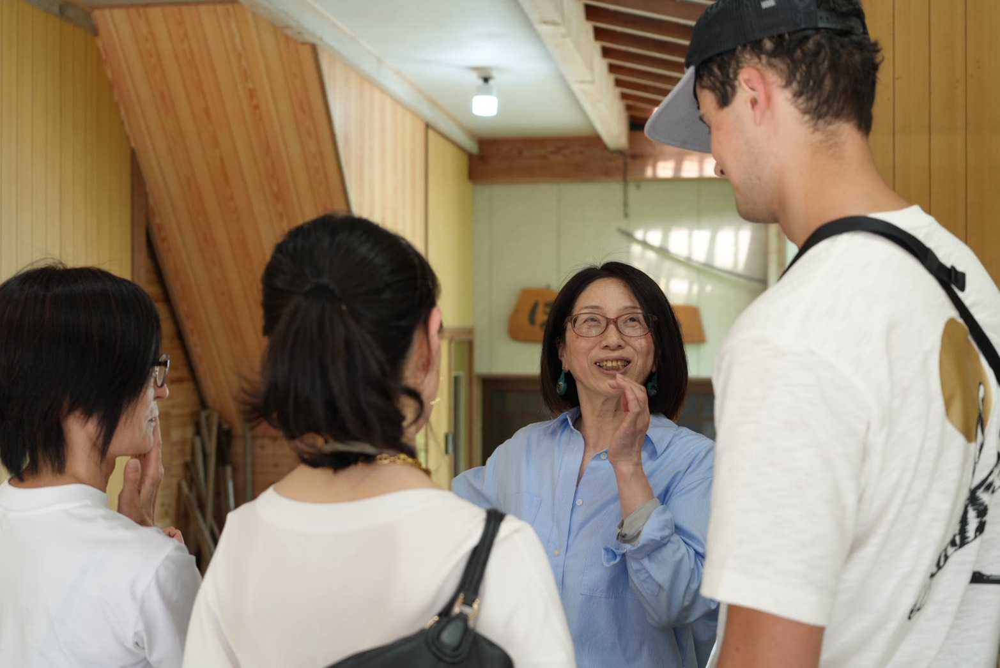
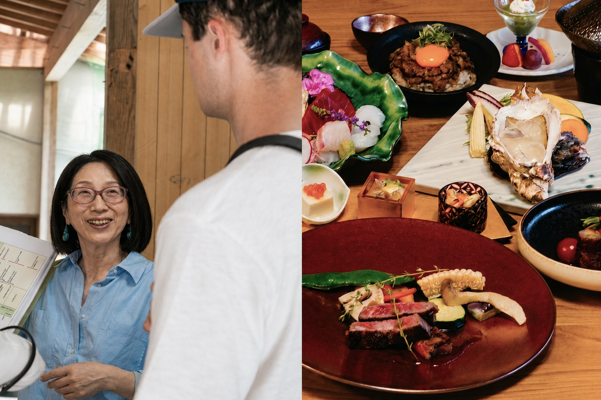

舟屋内部見学
一般の方の舟屋の内部を見学。海が「庭」である感覚を味わえます。
About Ine
あなたに合わせて、伊根の物語を編む。
1日1組限定のオーダーメイド舟屋ガイド。
このガイドは、決まった説明を一方的にお話しするのではなく、お客様が「どんな時間を過ごしたいか」を大切にしています。
静かに景色を味わいたい方。写真を楽しみたい方。地元の暮らしや裏話を聞きたい方。
ただ「美しい景色」を眺めるだけでは見えてこない、伊根という場所の"理由"を、一緒に歩きながら紐解いていきます。
事前のヒアリングをもとに、一日一組限定のオリジナルコースをご提案。
ここでしか出逢えないあなた色の旅の一コマをプロデュース致します。
「まるでブラタ◯リみたい！」
そんなお声をいただく、伊根を"体感する"ガイドです。
伊根町観光案内所 集合
舟屋エリアガイド
地形や町の暮らしの解説
舟屋体験
一般の方の舟屋の内部を見学。海が『庭』である感覚を味わう
海上クルーズ
約20分の伊根湾クルージングで、海から舟屋を感じ、景色と一体化になれる時間
「向井酒造」見学
女性杜氏の酒蔵を訪問（試飲なし）
※木曜定休・臨時休業も有り
昔ながらの漁法（もんどり漁）体験
ツアーの締めくくり
伊根の楽しみ方やおすすめのスポットをご紹介
※順番や内容は変更になることがあります
一般の方の舟屋の内部を見学。海が「庭」である感覚を味わえます。
約20分の伊根湾クルージングで、海から舟屋を感じ、景色と一体になれる時間。
昔ながらの漁法を体験。地元の暮らしに触れる貴重なひとときです。
女性杜氏が営む地元の酒蔵を訪問。伊根の文化と歴史を酒蔵から感じる体験です。
地元に暮らす方々との会話や、舟屋・土間での雑談など。旅行者には出逢えない「素の伊根」をご体験いただけます。
《伊根とツナガル》オリジナルポストカードや選べるお土産付きプランをご用意。旅の余韻をおうちでも。
Tour Plans
 スタンダード
スタンダード
舟屋エリアを歩きながら、地形・暮らし・歴史を体感。初めての伊根にぴったりの入門プランです。
1名様追加ごとに ¥4,400 / 5名様まで
含まれる体験
※こちらのコースには、海上タクシーは含まれません
このプランを予約
人気No.1事前ヒアリングで完全オーダーメイド。酒蔵見学＋海上クルージングで、伊根をより深く感じるプランです。
1名様追加ごとに ¥5,500 / 8名様まで
含まれる体験
※酒蔵は木曜定休のほか、臨時休業も有り
このプランを予約
プレミアム天橋立含む丹後半島全域を特別コースでご案内。ランチ・カフェ体験・地元サポーターとの交流まで、伊根を丸ごと体感する最上級プランです。
含まれる体験
FAQ
はい、事前予約をお願いしております。特に週末や祝日、ゴールデンウィーク、お盆期間は混み合いますので、お早めのご予約をおすすめします。当日のご予約も空きがあれば承りますが、確実にご参加いただくためには前日までのご予約をお願いいたします。
小雨程度であれば開催いたします。海上タクシープランは屋根付きの船もございますのでご安心ください。ただし、強風や荒天の場合は安全のため中止となることがあります。その際は前日または当日朝にご連絡いたします。
もちろんです。お子様連れのご家族も大歓迎です。小学生以下のお子様は保護者同伴でご参加いただけます。海上タクシーにはライフジャケットを完備しておりますので、安心してお楽しみいただけます。3歳以下のお子様は無料です。
向井酒造は木曜日が定休日のほか、臨時休業となる場合がございます。ご予約時に確認いたしますが、当日の状況によっては見学できないこともございます。あらかじめご了承ください。
はい、無料駐車場をご用意しております（約30台収容）。集合場所のすぐ近くにございますので、お車でお越しの方も便利にご利用いただけます。満車の場合は近隣の有料駐車場をご案内いたします。
前日までのキャンセルは無料です。当日キャンセルの場合は料金の50%、無断キャンセルの場合は100%のキャンセル料を頂戴しております。天候不良による中止の場合はキャンセル料はかかりません。
はい、英語対応可能なガイドが在籍しております。ご予約時に「英語ガイド希望」とお伝えください。また、英語の説明資料もご用意しておりますので、外国人のお客様にもお楽しみいただけます。
Access
伊根町観光案内所前
(京都府伊根町平田494)
※当サービスは観光案内所内で営業しているものではありません。集合場所として設定しています。
MAIL: aglet.takai@gmail.com
営業時間: 9:00〜17:00（不定休）
京都丹後鉄道「天橋立駅」より
丹海バスで約55分「伊根」下車
京都縦貫自動車道「与謝天橋立IC」より
国道178号線経由で約30分
※無料駐車場あり（約30台）